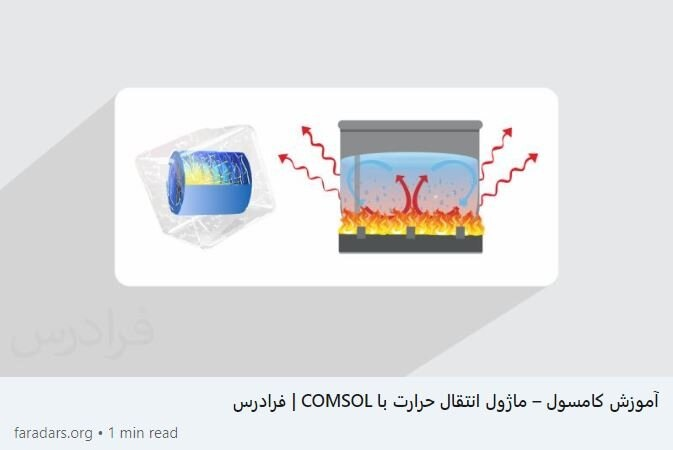

Researcher
- Graduate Research Assistant
Dates Employed: Mar 2020 – Present
■ Under supervision of Dr. Khademi 's Homepage
My key role consisted of:
1- Reading and reviwing related papres
2- Implenting ideas
3- Testing and improving the written code
4- Gathering information and writing the initial text for the papers
■ Published 3 Q1 articles and 2 to be published book chapter
- Iran's National Elites Foundation 's Homepage
Dates Employed: Nov 2019 – Sep 2020
Employment Duration: 11 mos
Location: Tehran, Iran
My key role consisted of:
1- Reviewed and modified process design and calculation for the Deaeration process
2- Modeled the Process
3- Designed the pilot plant
■ Design and fabrication of a small packed bed deaerator toward scale up
■ Fourth round of Ahmadi-Roshan Project
■ Team members

- Iranian Chemical Parks Development Company (ICPDC) 's Homepage
Dates Employed: Jun 2019 – Oct 2019
Employment Duration: 5 mos
Location: Esfahan, Iran
My key role consisted of:
1- Collaborated in pre-feasibility study
2- Studied Human resource, industries and mines, Basic substructure of the region
■ Iranian Chemical Parks Development Company (ICPDC) was founded based on need for value chain vision in the Iranian chemical industry.
ICPDC “as a fully private company” consults and cooperates with governmental organizations, such as The Center for Progress and Development (CPDI) of Iran Presidency,
or non-governmental companies in a wide range of project disciplines like design, scientific and industrial consultant, MC, etc.
Mentor
- Comsol Multiphysics Mentor
Dates Employed: Jul 2021 - Apr 2022
Employment Duration: 10 mos
Location: Tehran, Tehran, Iran
■ Published by FaraDars Tutorial link
■ Delivered online course tutorials for Heat transfer modules of Comsol Multiphysics Software
■ Demonstrated video tutoring using an online platform
■ Designed course and material contents and assignments according to newest changes and needs

Teaching Assistant
- Advanced transport phenomena
Dates Employed: Nov 2021 - Mar 2022
Employment Duration: 5 mos
Location: Tehran, Tehran, Iran
■ Under supervision of Dr.Vafa 's Homepage
■ Taught COMSOL Multiphysics to graduate students of Chemical engineering
■ Corrected student's homework
- Transport phenomena II
Dates Employed: Feb 2021 – Jul 2021
Employment Duration: 6 mos
Location: Tehran, Tehran, Iran
■ Under supervision of Dr. Saadatmand 's Homepage
■ Taught Heat & Mass transfer to undergraduate students of Petroleum engineering
■ Designed Quiz questions and corrected exam papers
■ Corrected student's homework
- Advanced transport phenomena
Dates Employed: Nov 2020 – Feb 2021
Employment Duration: 4 mos
Location: Tehran, Tehran, Iran
■ Under supervision of Dr.Vafa 's Homepage
■ Taught COMSOL Multiphysics to graduate students of Chemical engineering
■ Corrected student's homework
Internship
- Iran Chemical Industries Investment Company ICIIC 's Homepage
Dates Employed: Jul 2019 – Aug 2019
Employment Duration: 2 mos
Location: Next to Shahid-Montazeri Power Plant, Km15 of Isfahan-Tehran Road, Isfahan, Iran
■ Iran Chemical Industries Investment Co. (ICIIC) is a leading manufacturer of Normal-Paraffin, Linear Alkyl Benzene (LAB), and Heavy Alkylate (HAB) in the Middle East.
ICIIC has captured Iran’s domestic LAB market with more than 80% market share.
Its current manufacturing process is based on the UOP’s HF catalyzed alkylation technology
Volunteer experience
- Executive Committee Member of 10th National Chem-E-Car Competition in iran
Dates : Feb 2016
Location: University of Isfahan
■ Chem-E-Car Competition engages college students in designing and constructing a car powered by a chemical energy source,
that will safely carry a specified load over a given distance and stop